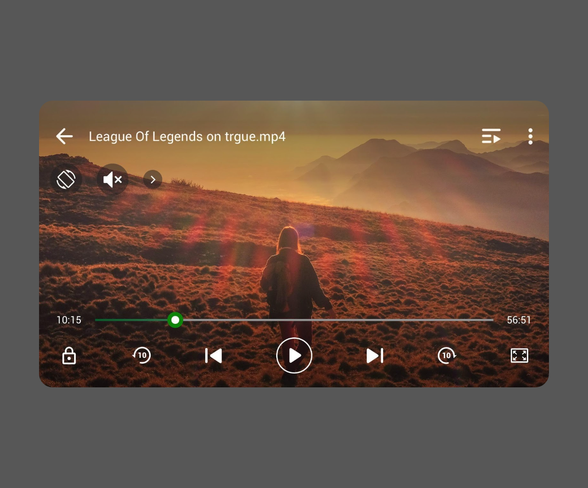
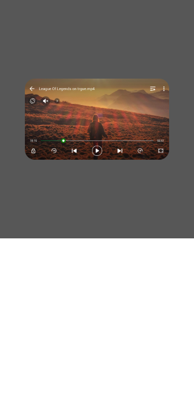

Предпросмотр видео
account/video-preview-static.html
Состояние медиа, а не видеозвонок.
| Когда открывается | Разрешенный Play/opener |
|---|---|
| Данные | mediaId; poster; source; duration; captions; access. |
| Сценарий | Открытие → загрузка → воспроизведение/пауза → закрытие к инициатору. |
| Переходы | Постоянный диалог |
В поставке только растровый poster, без настоящего player. Мелкие элементы внутри изображения не являются DOM-кнопками; нужен отдельный media contract.
Общая и предметная логика. Снимки и подписи элементов — исходная редакция макета; поздние уточнения ТЗ имеют приоритет в своей области. Это не проверка текущего сайта.
Состояние 1280 · 1280 × 1062


Элементы и ожидаемые действия
| Элемент | Название в макете | Действие | Ожидаемый результат |
|---|
Состояние 390 · 390 × 844


Элементы и ожидаемые действия
| Элемент | Название в макете | Действие | Ожидаемый результат |
|---|